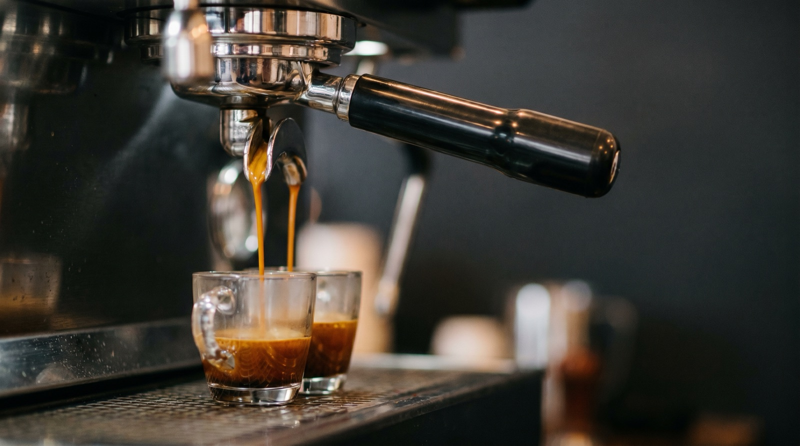
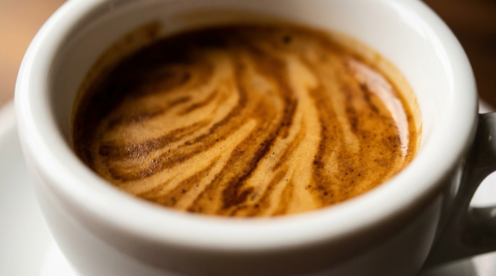

How to dial in your espresso: a step-by-step guide for home baristas.

Most people learn espresso by buying a machine, pulling a shot, tasting something bitter, and spending the next six months adjusting dials with no coherent theory. It does not have to be like that. Dialling in is a solvable problem with a short list of variables and a clear diagnostic language.
This guide is written for a home barista with a single-boiler or dual-boiler espresso machine, a decent grinder, and a bag of specialty coffee. If that is you, in the next fifteen minutes you will have a working framework that lets you sit down with a new bag, pull three shots, and land on a recipe you are happy to drink.
What "dialling in" actually means
Dialling in is the process of adjusting the variables under your control — dose, grind, and yield — until a specific coffee, on your specific machine, tastes balanced. Balance is the goal. Not a specific time. Not a specific ratio. Balance.
A balanced shot has three properties:
- It is not sour. Sourness means under-extraction — you pulled the shot before enough of the coffee's compounds had dissolved into the water.
- It is not astringent or bitter. Bitterness means over-extraction — the water stayed in contact with the grounds too long and pulled out compounds you did not want.
- It tastes like the notes on the bag. When you read "blackcurrant, honey, cocoa" and you can pick out at least one of those in the cup, you are in the sweet spot.
Every dial-in is an attempt to land on those three at once, for this bean, on this machine, today. Next week's bag will be different. Your job is not to memorise numbers — it is to learn the dance.
The four variables — and the order to change them
There are four variables you have control over, and you should change them in this order:
1. Dose (the amount of dry coffee)
Set this once per basket size and stop thinking about it. A standard 18 g VST basket takes 18 g. A 20 g basket takes 20 g. Pick a basket, stick with it, and do not drift your dose during a dial-in. Changing dose while you are also changing grind makes it impossible to tell which move fixed the cup.
2. Ratio (how much liquid you pull)
The industry-standard starting ratio for modern espresso is 1:2 — 18 g in, 36 g out by weight. Darker roasts sit closer to this. Lighter roasts, which are harder to extract, often taste better at 1:2.5 or even 1:3. Start at 1:2 and only stretch the ratio if the shot tastes sour at a reasonable grind.
3. Grind size (the biggest lever)
Grind is where 80% of dialling in happens. Finer grind means more surface area, more resistance, slower flow, higher extraction. Coarser means less of all four. Most new home baristas change grind in enormous steps and lose the thread. Move in small increments. One click at a time.
4. Time (a diagnostic, not a target)
Time is what falls out of the other three, not something you set. A good double shot pulls in 25 to 32 seconds. If yours pulls in 18 seconds, your grind is too coarse. If it pulls in 45 seconds, too fine. But a 28-second shot that tastes sour is still sour. Time is a diagnostic, never the goal.
If you remember nothing else from this guide, remember this: change one variable at a time, and always taste the cup before you adjust.
Your starting recipe
Before you touch the grinder, write your starting recipe down. Here is the default for a modern medium-roast specialty coffee on an 18 g basket:
- Dose: 18 g
- Yield: 36 g (1:2 ratio)
- Target time: 25–32 seconds
- Water temp: 93°C (whatever your machine does by default is fine)
- Grind: whatever your last known good grind was; one click finer if you have a new bag.
Pull the shot. Taste it. Do not sweeten. Do not add milk. Taste it straight and write down one word: sour, balanced, or bitter.
Grind: the biggest lever
Once you have tasted the first shot, the move is almost always a grind adjustment:
- Sour? Grind finer by one step. Pull another shot. Taste again.
- Bitter or harsh? Grind coarser by one step. Pull another shot. Taste again.
- Balanced but odd? The grind is in range. The variable to move is probably ratio — try a 1:2.3 instead of 1:2, or bump yield up 4 grams.
"One step" means one click on a click-based grinder (1Zpresso, Comandante), one number on a stepped grinder (Niche, Baratza), or a tenth of a rotation on a stepless grinder (Eureka, Mazzer). Different grinders have wildly different step sizes. The Niche Zero's steps are large. The 1Zpresso K-Ultra's are small. Learn your grinder, and note that if you change grinders the calibration starts over from scratch.
When the grind is right, the shot has a specific look
A well-dialled-in shot from a well-prepared puck has a particular aesthetic. The first drops fall between 6 and 10 seconds in. The stream is amber, thin, and unbroken — never spritzing or gushing. The crema arrives reddish-brown, not pale blonde, and does not dissipate instantly. You will learn what your machine's "right" looks like within a few bags. Trust your eyes after you trust your tongue.

Taste: the only signal that matters
Most new baristas get obsessed with numbers. Time in the cup. Refractometer readings. Puck resistance. These are all correlates of a balanced shot, never the shot itself. The cup is the shot. If you are caught between two adjustments and the cup tastes great, stop adjusting.
Develop the habit of tasting the shot straight, without milk or sugar, every time. Even if you are making a flat white. The espresso under the milk is where the information lives. Write one sentence in your notes: "Bright, clean, a bit sharp on the finish — grind one notch finer next time." That single sentence is worth more than a week of refractometer readings.
A repeatable dial-in workflow
Here is the workflow I use for every new bag. It takes about ten minutes and three shots of coffee.
- Shot 1. Starting recipe — your last known good grind, 18 g in, 36 g out, whatever time falls out. Taste.
- Shot 2. One grind step in the direction the first shot pointed (finer if sour, coarser if bitter). Same dose and yield. Taste.
- Shot 3. If shot 2 is closer but not there yet, move one more step in the same direction. If it overshot, move half a step back. Taste.
- Shot 4 and beyond. You should be within the sweet window by now. Refine with ratio adjustments (small — 2 g up or down on yield at a time) or leave it alone and drink the coffee.
Three shots, with notes, is a bag dialled in. The first week on a new bag you will pull slightly different recipes every day as the coffee continues to degas. The second week, you settle. The third week, you finish the bag. Start again.
Let the app do the book-keeping.
Extraction is an espresso log built around exactly this workflow. Every shot writes itself — dose, grind, yield, time, taste — so you can see what moved the cup and what didn't. Pair an Acaia scale and the brew runs itself.
Download on the App StoreFrequently asked questions
Sourness almost always means under-extraction. Try grinding finer by one click — this slows the flow, gives water more contact time with the grounds, and pulls out more of the sugars and aromatics that balance the acidity.
Bitterness is over-extraction. Grind coarser by one click, or pull a shorter ratio (try 1:1.8 instead of 1:2). Dark roasts are especially prone to bitter shots — start with a more conservative ratio.
Any grinder with stepless or fine-stepped adjustment. The Niche Zero, Eureka Mignon series, DF64, 1Zpresso J-Max, and the Baratza Sette 270 all dial in well. What matters more than the brand is that adjustments are small enough that you can move one notch at a time.
Yes. Without a scale you cannot measure dose or yield, and without those two measurements dialling in is guessing. Any kitchen scale with 0.1 g resolution works. A proper brew scale like the Acaia Lunar, Pearl, or Pyxis adds timer and pour-curve tracking — nice, not essential.
Every new bag, and often within a bag as it ages. Coffee degasses for about two weeks after roasting; during that window the same grind setting produces different shots. Assume you will nudge grind once or twice per bag.
Written by the team behind Extraction, the espresso log and coffee tracker for home baristas.